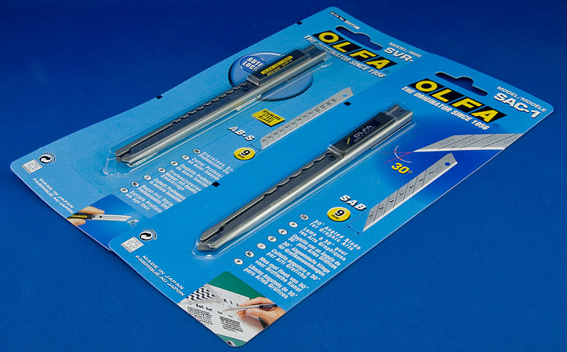
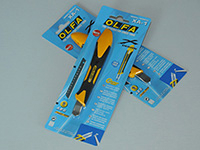
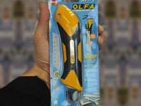
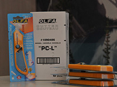
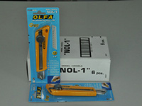
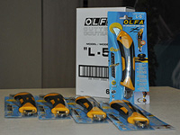
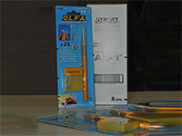

Инструменты, аксессуары
Ножи OLFA (Япония)
- OLFA SAC-1
-

Нож OLFA SAC-1 предназначен для того, чтобы выполнять графические работы, и чтобы производить точные, фигурные и тонкие разрезы в разнообразных материалах. У ножа OLFA SAC-1 из нержавеющей стали надежная конструкция, из-за чего, нож очень популярен среди профессиональных художников-оформителей и обычных художников.
Нож OLFA SAC-1 отлично подходит для того, чтобы выполнять графические работы, этому способствуют специальные лезвия с углом тридцать градусов. У ножа имеется съемная клипса и специальный механизм для фиксации сегмента лезвия, с прорезью, чтобы отламывать затупившиеся сегменты лезвия.
Нож модели OLFA SAC-1 очень часто используют для тонировки. Он полностью произведен из нержавеющей стали. Его применяют для работы во влажной среде, а лезвие SAB предназначено, чтобы обрезать тонировочную пленку прямо на стекле, во время этого процесса стекло не царапается.
Ручка ножа достаточно удобная, обеспечивает комфорт и безопасность осуществляемых работ.
- OLFA ХА-1
-

Универсальный нож OLFA ХА-1
Двухкомпонентная противоскользящая рукоятка эргономичной формы сделана из армированного полипропилена и эластомера..Нож КА-1 не подвержен воздействию бензина, ацетона и других органических растворителей. Физические особенности ХА-1 делают его практичным и обеспечивают максимальный контроль и комфорт, уменьшают вероятность повреждения рук при резании. На ноже установлена хорошо известная модель автоматической блокировки лезвия.Рекомендуется использование лезвий OLFA ASB 10, ASBB 10
- OLFA XH-1
-

Сверхпрочный нож OLFA XH-1
Сверхпрочный нож с усиленными направляющими из нержавеющей стали для проведения профессиональных ремонтных работ. В ноже используется особо прочное лезвие шириной 25 мм. Двухкомпонентная противоскользящая рукоятка «ComfortGrip» эргономичной формы обеспечивает максимальный контроль и комфорт при резании, уменьшает вероятность повреждения рук. Данный нож не подвержен воздействию бензина, ацетона и других органических растворителей. Винтовой фиксатор надежно удерживает лезвие. Идеально подходит для разрезания сложных твердых материалов.Рекомендуется использование лезвий OLFA HB-5B
- OLFA PC-L
-

Нож для пластика OLFA PC-L
Нож для резки пластика OLFA PC-L - это усовершенствованная модель ножа OLFA P-800 для резки пластиков и ламинатов. Маркировка GS говорит о том, что данный нож сертифицирован по немецким стандартам безопасности, которые признаны не только в Германии, но и так же во всем мире. Награда Good design award, выдаваемая Японской организацией внедрения промышленного дизайна, подтверждает, что данное изделие обладает выдающимся качеством как в плане дизайна, так и практическом использовании.Рекомендуется использование лезвий OLFA PB 800
- OLFA NOL-1
-

Нож OLFA NOL-1 для ремонтных работ
Нож с направляющими из нержавеющей стали и усиленным лезвием. Механизм фиксации лезвия – винтовой с трещоточным колесиком, дозирующим усилие зажима. Рукоятка "Comfort Grip" удобно располагается в руке благодаря материалу, форме и наличию ребер. Упор на рукоятке предотвращает соскальзывание руки вперед. Нож устойчив к воздействию растворителей и ацетона. Идеально подходит для нарезания обоев, катрона, кожи, для строительных работ и промышленного применения.Рекомендуется использование лезвий OLFA LB 10, LBB 10
- OLFA L - 5
-

Высокопрочный нож OLFA L - 5
Очень мощный нож с усиленными направляющими из нержавеющей стали для проведения профессиональных ремонтных работ. В ноже используется прочное лезвие шириной 18мм. Двухкомпонентная противоскользящая рукоятка «ComfortGrip» эргономичной формы обеспечивает максимальный контроль и комфорт при резании, уменьшает вероятность повреждения рук. Данный нож устойчив к воздействию бензина, ацетона и т.д. Винтовой фиксатор надежно удерживает лезвие. Идеально подходит для разрезания гипсокартона, кровельных материалов, резины, кожи, и т.д. В задней части имеется отверстие для шнура на руку, и мощный стальной хвостовик которым удобно открывать металлические банки с краской и разжимать скобы. Рекомендуется использование лезвий OLFA LB 10, LBB 10
- OLFA AK-1
-

Нож OLFA AK-1 - дизайнерский с перовым лезвием
Нож для художественных работ по форме напоминающий перо имеет фасонную рукоятку и цанговый зажим, обеспечивающий быструю смену лезвия. В набор входит 25 сменных лезвий, изготовленных из инструментальной стали и имеющих угол режущей кромки 32.80. Идеально подходит для бытового и профессионального использования, применяется для выполнения точных фигурных тонких резов и вырезания мелких форм, аппликаций из пленки, ткани, бумаги, картона, кожи и т.п. Рекомендуется использование лезвий OLFA KB